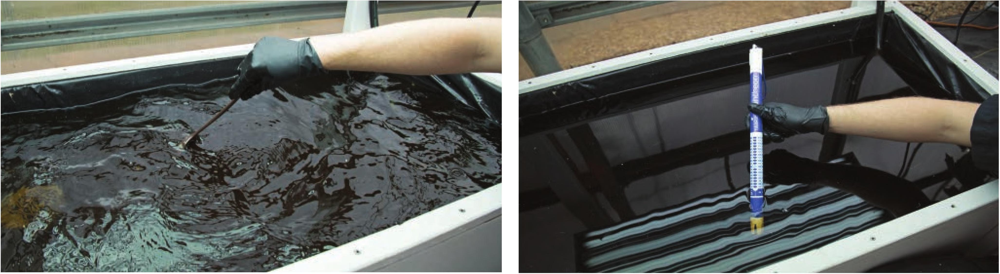
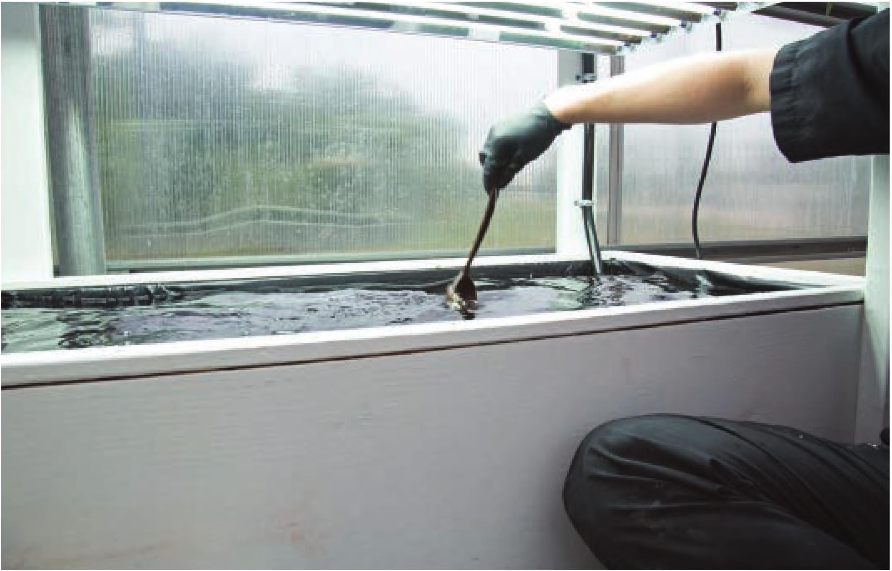

Stir the reservoir by hand or use a pump to circulate the nutrient solution to disperse the concentrated fertilizer after each addition. Check the EC after adding fertilizer and continue adding small amounts of fertilizer until the target EC is reached. Measure the pH after reaching the Any pH up and pH down products should always be target EC. handled with caution. Avoid skin contact and follow all safety recommendations on the product label. Add pH down or pH up in small increments. Thoroughly mix in additions before retesting the pH. Slowly adjust the pH until the meter readings are within the target range. SYSTEM MAINTENANCE 159

